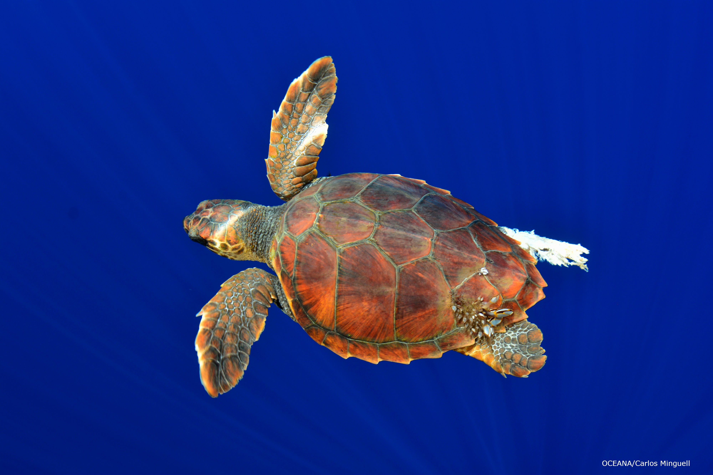

KEY LARGO DIVE CHARTER

Key Largo Dive Charter was first founded in 2019. The charter, operating out of the famed Key Largo, cunducts every weekend several dive tours, including shallow water dives, cage dives, and night dives. Snorkel tours also will later be added to our extensive roster of activities. A few of the animals we commonly see on our trips are souther sitngrays, lemon sharks, bottlenose dolphins, various species of butterflyfish, and the critically endangered Kemp's Ridely Sea Turtle.
What should you do?
RENTALS

We provide a BCD, tank, and westuit to our divers. You can also rent a snorkel, mask, and fins for extra.
Click to View More on Rentals
CONTACT US

During the week we are available to contact from 8am-3pm.
phone: 774-420-6606
email: nmg112@miami.edu
DIVES

Key Largo Dive Charter conducts wide variety of dives, and on different dives you will come into contact with different species. Shallow water dives will bring you close to dolphins, colorful reef fish, and manatees. Cage dives put you up close and personal with hammerheads and tiger sharks. Night dives can bring about any number of animals, including beautiful luminescent jellyfish.
Click to View More on Dives
CERTIFICATION

Becoming a PADI Certified diver with one of our great instructors. We offer courses covering open water and advanced open water divers.
Click to View More on Certifications